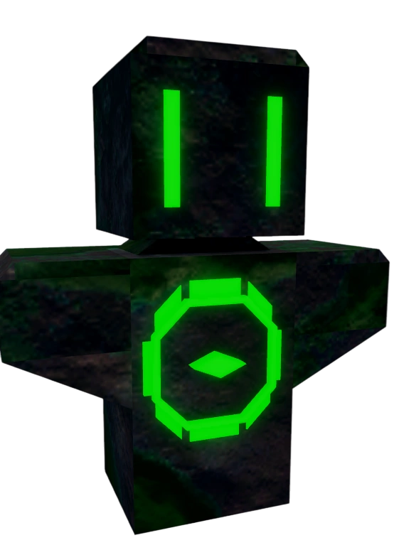

Mutation Totem image mapping proof
Before (fish resolver)
Mutation Totem
60
/api/fishit-tracker/assets/fish/31762b3eb03df2bf.png
imageSource=gameitemdb_icon via fish cache
After (totem resolver)

Mutation Totem
60
/api/fishit-tracker/assets/totems/totem_mutation_totem.webp
imageSource=totem_manual_asset, imageResolver=totem_catalog